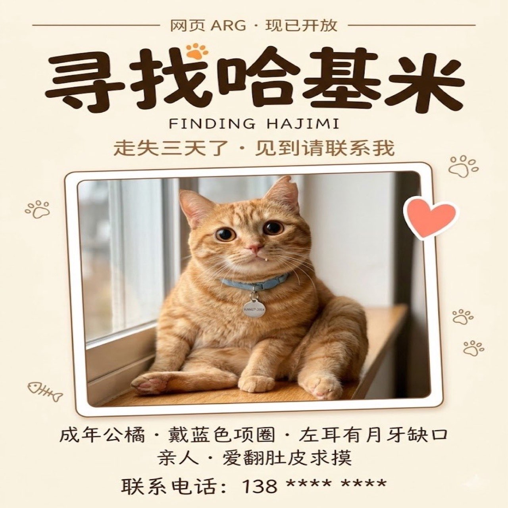

寻找哈基米
FINDING HAJIMI

你是不是也刷到过这样的帖子。
"成年公橘，戴蓝色项圈，左耳有月牙缺口。朝阳公园西门走失，已经三天了。"
配图是一只圆滚滚的胖橘，仰着头看镜头，眼睛湿漉漉的。下面好多人留言，说会帮忙转，说一定能找到。失主回复每一条："谢谢，真的谢谢。"
你顺手转发了，关掉手机。可那只橘猫的脸一直在你脑子里。
晚上躺下来又翻开手机，你想再看一眼那条帖子——结果发现，最近几个月，丢猫的消息突然多了起来。
几乎都是橘猫。几乎都戴着项圈。几乎，都是在朝阳公园附近。
事情，真的有这么简单吗？
游戏目的
- 代入一个偶然刷到走失帖子的普通网友，从一个搜索框开始
- 顺着小红书 / 微信群 / 寻猫海报 / 公园监控的线索，把哈基米找回家
- ……如果你足够细心，可能会发现走失的不只是一只猫
玩法说明
- 纯网页 · 不用下载、不用注册、不用付费，浏览器就能玩
- 所有线索都写在页面上——不需要 F12、不需要看源代码，正常阅读 + 动脑就能解
- 每个页面右下角有
XX/总页数序号，数字越大越接近真相 - 右上角的「?」是卡关提示，能自己推进的话尽量别看
- 推荐用电脑浏览器，多窗口切换记线索更顺手；手机也能玩，体验稍差
- 主线大概需要 1–2 小时·完整通关含支线 3–4 小时
—— Staff ——
剧本 · 程序 · 美术 · daituzhang
致谢 · 所有帮哈基米转发过的人
© 2026 · 这是一个虚构故事 · 现实里请好好关心你身边的猫